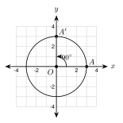
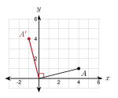
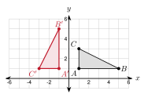
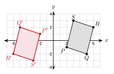
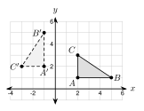
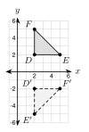
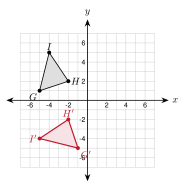
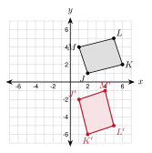

3.3 Rotations
- Name the center, angle, and direction of a rotation
- Rotate a point or a figure 90°, 180°, or 270° about the origin
- Use distance and slope to check a rotation
- Find the rotation that maps one figure onto another
Warm-Up
1. 17
2. 14 and −4
3. 3
3.3.1Center, Angle, and Direction
- A rotation turns every point of a figure about a fixed point, the center of rotation.
- Counterclockwise is the positive direction. Clockwise is negative.
- A turn of 90° clockwise is the same as a turn of 270° counterclockwise.

In the Ferris wheel figure, the seat moves from A(3, 0) to A′(0, 3) about O(0, 0).
Center: O(0, 0)
Angle: 90°
Direction: counterclockwise (the arrow turns left, up from the x-axis)
Write each rotation as a counterclockwise angle.
a. 90° clockwise: 360° − 90° = 270° counterclockwise
b. 270° clockwise: 360° − 270° = 90° counterclockwise
c. 180° clockwise: 180° counterclockwise
a. Write 90° counterclockwise as a clockwise angle.
360° − 90° = 270° clockwise
b. The minute hand of a clock moves from 12 to 6. What is the angle and direction?
180° clockwise (or 180° counterclockwise)
3.3.2Rotating About the Origin
| Rotation (counterclockwise) | Rule |
|---|---|
| 90° | (x, y) → (−y, x) |
| 180° | (x, y) → (−x, −y) |
| 270° (or 90° clockwise) | (x, y) → (y, −x) |
- A point and its image are the same distance from the center.
- For 90°, the segments from the center to A and to A′ are perpendicular.

Rotate A(4, 1) by 90° counterclockwise about the origin. Then check.
A′ = (−y, x) = (−1, 4)
Distance OA: 42 + 12 = 17. Distance OA′: (−1)2 + 42 = 17.
Slope of OA: 14. Slope of OA': −4.
The slopes multiply to 14 · (−4) = −1, so OA ⊥ OA'.
a. Rotate B(−3, 2) by 180°: (−x, −y) = (3, −2).
b. Rotate C(2, 5) by 270° counterclockwise: (y, −x) = (5, −2).
a. Rotate P(−2, 6) by 90° counterclockwise about the origin.
(−y, x) = (−6, −2)
b. Rotate Q(5, −3) by 90° clockwise about the origin.
90° clockwise is 270° counterclockwise: (y, −x) = (−3, −5)
3.3.3Graphing the Image

Rotate △ ABC by 90° counterclockwise about the origin. A(1, 1), B(5, 1), C(1, 3).
Use (x, y) → (−y, x).
A′ = (−1, 1), B′ = (−1, 5), C′ = (−3, 1)

Rotate PQRS by 180° about the origin. P(2, −1), Q(5, −2), R(6, 2), S(3, 3).
Use (x, y) → (−x, −y).
P′ = (−2, 1), Q′ = (−5, 2)
R′ = (−6, −2), S′ = (−3, −3)
(y, −x): J′(−1, 4), K′(−3, 1), L′(2, 2)

3.3.4Finding the Rotation
- A rotation keeps every length and every angle. It is a rigid motion.
- A rotation does not reverse orientation. Labels go the same way around.

△ ABC is mapped to △ A′B′C′. Find the rotation about the origin.
Test A(2, 1) → A′(−1, 2).
90° rule: (−y, x) = (−1, 2). It matches.
Check B(5, 1): (−y, x) = (−1, 5). It matches B′.
The rotation is 90° counterclockwise about the origin.
a. P(3, −2) → P′(−3, 2). Find the rotation.
(−x, −y) = (−3, 2). It is a 180° rotation.
b. Q(4, 1) → Q′(1, −4). Find the rotation.
(y, −x) = (1, −4). It is 270° counterclockwise, or 90° clockwise.
1. A rotation turns a figure about a fixed point, the center.
2. 90° clockwise is the same as 270° counterclockwise.
3. The rule for a 180° turn about the origin is (x, y) → (−x, −y).
4. A rotation is a rigid motion.
Practice
Use the figure for problems 1 to 4.

1. What is the center of rotation?
the origin
2. Name the image of E.
E′
3. Is it a 90°, 180°, or 270° counterclockwise rotation?
270° counterclockwise (90° clockwise)
4. Write the rule.
(x, y) → (y, −x)
Write each rotation as a counterclockwise angle.
5. 90° clockwise 270°
6. 270° clockwise 90°
7. 180° clockwise 180°
8. 270° counterclockwise, as a clockwise angle 90° clockwise
Rotate each point about the origin.
9. (3, 5) by 90° counterclockwise. (−5, 3)
10. (−2, 4) by 180°. (2, −4)
11. (6, −1) by 270° counterclockwise. (−1, −6)
12. (−4, −3) by 90° counterclockwise. (3, −4)
13. (5, 2) by 90° clockwise. (2, −5)
14. (0, −6) by 180°. (0, 6)
15. (−7, 2) by 270° counterclockwise. (2, 7)
16. (1, −8) by 90° clockwise. (−8, −1)
Graph the image.

17. Rotate △ GHI by 90° counterclockwise about the origin. Give the image coordinates.
G′(−1, −5), H′(−2, −2), I′(−5, −4)
Graph the image.

18. Rotate JKLM by 90° clockwise about the origin. Give the image coordinates.
J′(1, −2), K′(2, −6), L′(5, −5), M′(4, −1)
Graph the image on your own grid.
19. Triangle XYZ has X(−1, 2), Y(−4, 3), Z(−2, −4). Rotate it 180° about the origin. Give the image coordinates.
X′(1, −2), Y′(4, −3), Z′(2, 4)
Find the rotation about the origin.
20. A(3, 1) → A′(−1, 3) 90° counterclockwise
21. B(−2, 6) → B′(2, −6) 180°
22. C(4, −5) → C′(−5, −4) 90° counterclockwise
Check what stays the same.
23. A(5, −2) is rotated 90° counterclockwise about the origin to A′(2, 5). Show that OA = OA′ and that OA ⊥ OA'.
OA = 29 and OA′ = 29. The slopes are −25 and 52. Their product is −1.
24. A rotation maps △ XYZ to △ X′Y′Z′. XY = 7 and m∠Z = 51°. Find X′Y′ and m∠Z′.
X′Y′ = 7 and m∠Z′ = 51°.
25. The point (3k, k − 2) is rotated 180° about the origin. The image is (−12, −2). Find k.
−3k = −12, so k = 4. Check: −(4 − 2) = −2.
26. The point (a, 5) is rotated 90° counterclockwise about the origin. The image is (−5, 3). Find a.
(−y, x) = (−5, a), so a = 3.
Real problems.
27. The tip of a clock's minute hand is at (0, 6) at 12:00. Each unit is 1 inch. Where is the tip at 12:15? Use a rotation.
15 minutes is 90° clockwise. (x, y) → (y, −x) gives (6, 0).
28. A Ferris wheel has its center at the origin. Each unit is 1 meter. A seat is at the bottom, (0, −10). The wheel turns 180°. How many meters does the seat rise?
The seat goes to (0, 10). It rises 10 − (−10) = 20 meters.
Find the mistake.
29. Ahmad rotates (2, 3) by 90° counterclockwise and gets (3, −2). What went wrong? What is the correct image?
He used the 270° rule (y, −x). The 90° rule is (−y, x), which gives (−3, 2).
Test Practice
A. (5, 3) ← correct
B. (−5, −3)
C. (3, −5)
D. (−3, −5)
A. A′B′ = 4 and A'B' is vertical. ← correct
B. A′B′ = 4 and A'B' is horizontal.
C. A′B′ = 5 and A'B' is vertical.
D. A′B′ = 8 and A'B' is horizontal.
Challenge
(x, y) → (−y, x) → (−x, −y) → (y, −x). It is the 270° rule.